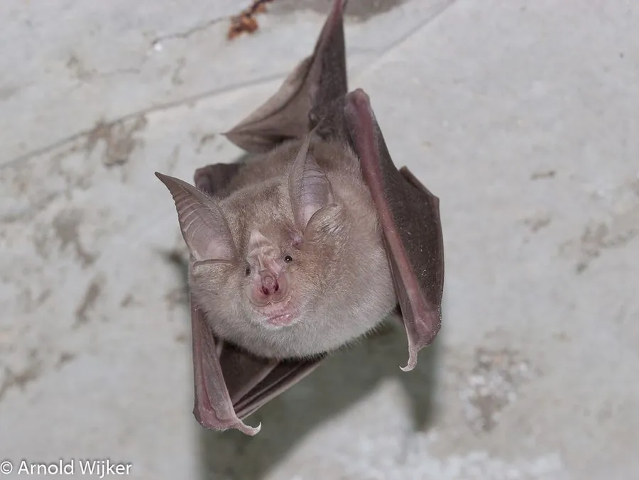

哺乳动物 · 动物界
大菊头蝠 Rhinolophus ferrumequinum

欧洲至东亚的大型菊头蝠，鼻部有马蹄形鼻叶，靠高频回声定位在夜空中捕食蛾类，常在山洞中冬眠。
- 分类
- 门脊索动物门纲哺乳纲目翼手目科菊头蝠科属菊头蝠属
- 栖息环境
- 洞穴、废弃建筑、树洞与附近的森林和农田
- 地理分布
- 欧洲、北非和亚洲，从英国到中国、日本
- 保护级别
- IUCN 无危（LC）
物种志
大菊头蝠前臂长 5.4–6.1 厘米，体重 17–34 克。它的鼻部有复杂的马蹄形鼻叶，用于聚焦超声波；毛色为灰褐至黄褐色，腹部较浅，耳朵大而尖，没有耳屏。它是欧洲体型最大的菊头蝠。
大菊头蝠分布于欧洲、北非和亚洲，从英国、地中海沿岸到中国、日本，栖息在洞穴、废弃建筑和树洞中。它夜间捕食蛾类、甲虫和蝇类，常在树林边缘和灌木丛上方低空飞行，用高频回声定位发现猎物。冬季它与其他菊头蝠一起在山洞中冬眠，繁殖期雌性聚集在育幼洞中。雌性妊娠期约 3 个月，每年 1 胎，寿命可达 20–30 年。由于洞穴干扰、农药使用和栖息地丧失，部分地区种群下降，目前被列为无危。
形态与习性
- 食性蛾类、甲虫与蝇类
- 前臂长5.4–6.1 cm
- 体重17–34 g
- 寿命20–30 年
- 繁殖妊娠约 3 个月，每年 1 胎
- 特征鼻部有马蹄形鼻叶
趣味知识
- 大菊头蝠的鼻叶呈马蹄形，能帮助聚焦超声波。
- 它在欧洲是体型最大的菊头蝠，翼展可达 35 厘米。
- 大菊头蝠寿命很长，部分个体可活 20 年以上。